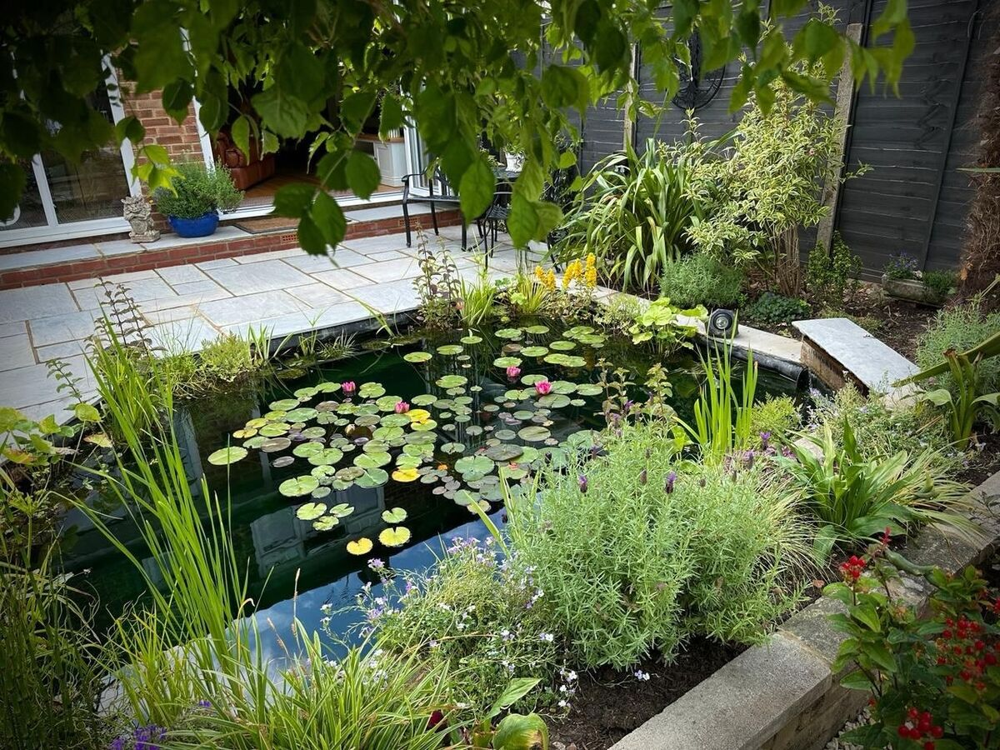

There is something profoundly calming about the sound of water. A gentle cascade, a reflective pool catching the evening light, a rill guiding your eye through a garden — water features have the power to transform an outdoor space in a way that no other element can match.
At A Sterling Landscapes, we design and build bespoke water features for gardens across West Sussex, Surrey and beyond. In this article, we explore the different types of water features available, what they cost, and how to choose the right one for your garden.
Why Add a Water Feature?
A water feature is not simply a visual addition. It engages multiple senses and changes the atmosphere of a garden fundamentally:
- Sound — Moving water creates a natural white noise that masks traffic, neighbours and urban background sounds. Many of our clients in Chichester and Brighton specifically request water features for this purpose.
- Movement — A garden without movement can feel static. Water introduces dynamic energy — light dances across the surface, reflections shift, droplets catch the sun.
- Wildlife — Water attracts birds, dragonflies, frogs and beneficial insects. Even a small water feature creates a micro-habitat that enriches the garden ecosystem.
- Focal point — A well-positioned water feature draws the eye and creates a natural gathering point. It anchors the garden design.
- Property value — A bespoke water feature, particularly when integrated into a high-quality garden scheme, adds genuine value to your property.
Types of Water Features
Contemporary Water Blades
Stainless steel water blades project a smooth, unbroken sheet of water from a wall or raised feature into a collecting pool below. The effect is mesmerising — clean, architectural and unmistakably modern.
These work beautifully in contemporary garden designs, particularly when lit from below. We often integrate water blades into rendered feature walls, creating a focal point that functions both in daylight and after dark.
Cost range: £2,000–£8,000 depending on blade width, wall construction and pool design.
Natural Stone Rills
A rill is a narrow, shallow channel of water that runs through a garden — often following a path or connecting two areas. The gentle sound of water trickling along a stone channel is incredibly soothing, and the visual effect adds a sense of movement and direction to the garden layout.
Rills work particularly well in formal garden designs and can be constructed in natural stone, corten steel or bespoke-cast channels.
Cost range: £3,000–£10,000 depending on length and materials.
Boulder Cascades
For a more naturalistic feel, boulder cascades use carefully positioned natural rocks to create a tumbling, organic water flow. These features look as though they have always been part of the landscape — particularly effective in rural gardens around Petersfield, the South Downs and more traditional properties.
Cost range: £2,500–£7,000 depending on size and stone selection.
Reflecting Pools
Still water has its own magic. A reflecting pool creates a mirror-like surface that captures the sky, surrounding planting and architectural features. The effect is contemplative, elegant and surprisingly impactful even in small gardens.
Cost range: £3,000–£12,000 depending on size and construction method.
Raised Water Features
Self-contained raised features — including bubbling spheres, overflowing urns and cube fountains — offer an accessible way to introduce water without major groundworks. These can be positioned on patios, in courtyards or as standalone features in borders.
Cost range: £500–£3,000 including installation.

Practical Considerations
Electricity and Pumps
Most water features require a submersible pump powered by mains electricity. This means running an armoured cable from your house to the feature — a job that should always be done by a qualified electrician. Solar-powered pumps are available for smaller features but generally lack the power for anything substantial.
Maintenance
Water features require some seasonal maintenance. Pumps should be cleaned or replaced periodically, water levels topped up during dry spells, and the feature winterised (or kept running) during freezing weather. A well-built feature with quality components requires minimal ongoing attention — perhaps an hour or two per season.
Positioning
Consider where you will enjoy the water feature most. Near a seating area? Visible from the house? Along a garden path? The sound of water is directional — position the feature where you spend the most time for maximum enjoyment.
Avoid placing water features directly under deciduous trees, as falling leaves will clog pumps and filters. A partly sheltered position with good light is ideal.
Integrating Water Features into Your Garden Design
The most impactful water features are those designed as integral parts of the overall garden scheme rather than added as afterthoughts. When we design a garden at A Sterling Landscapes, we consider how water can enhance the space from the very first sketch.
A water feature connected to a retaining wall, for example, serves a dual purpose — the wall creates a level change while the water adds drama. A rill linking a patio to a garden room creates a visual journey. A reflecting pool at the foot of a boundary wall makes a small garden feel twice its size.
This integrated approach is what separates a feature that feels like it belongs from one that feels bolted on.
Get Inspired
Browse our water features gallery to see examples of features we have designed and built across West Sussex. Every feature is bespoke — created to complement the specific garden and the client's vision.
Ready to discuss a water feature for your garden? Get in touch for a free consultation, or call us on 07795 599 909.
Discuss Your Water Feature
We would love to hear your ideas. Contact us for a free, no-obligation consultation.